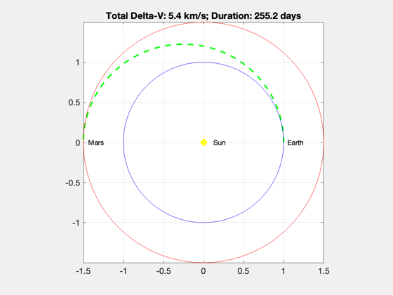

Hohmann transfer to Mars.
This is the most fuel efficient way to get to Mars. Assumes Mars and Earth are coplanar and have circular orbits. Creates a plot showing the transfer orbit. ------------------------------------------------------------------------- See also DVHoh, Constant, Period -------------------------------------------------------------------------
%-------------------------------------------------------------------------- % Copyright (c) 2013 Princeton Satellite Systems, Inc. % All Rights Reserved. % Since version 2014.1 %-------------------------------------------------------------------------- % Compute the mission Delta-V and time of flight %----------------------------------------------- aU = Constant('au'); muSun = Constant('mu sun'); v1 = sqrt(muSun/aU); [dV, dV1, dV2, eT, aT] = DVHoh( aU, 1.5*aU, v1, muSun ); tOF = Period(aT,muSun)/2; % Transfer orbital elements %-------------------------- t = linspace(0,tOF); el = [aT 0 0 0 eT 0]; rT = RVFromKepler( el, t, muSun ); NewFig('Hohmann Transfer') plot(rT(1,:)/aU,rT(2,:)/aU,'--g','linewidth',2); hold on a = linspace(0,2*pi); plot(cos(a),sin(a),'b'); % Earth plot(1.5*cos(a),1.5*sin(a),'r'); % Mars plot(0,0,'oy','linewidth',4) text(0,0,' Sun') text(1.02,0,' Earth') text(-1.49,0,' Mars') title(sprintf('Total Delta-V: %.2g km/s; Duration: %.1f days',dV,tOF/86400)) grid on axis image %-------------------------------------- % PSS internal file version information %-------------------------------------- % $Id: f91847ed7225ebd60fad9a39f47e00814cfccd42 $